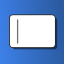

Code 16
Développement web de qualité
Nous concevons depuis 2007 des sites internet et des applications mobiles à partir
de technologies open-source, avec une approche d’artisan : un développement sur-mesure
qui permet d’avoir la main à tous les niveaux.
Ces dernières années, notre expertise s’est principalement portée sur les
technologies Laravel
et Vue.js.
Nos clients ont un point commun : ils veulent une solution adaptée à un
problème qui n'est pas forcément standard, tout en bénéficiant d’outils qui les rendent
autonomes au quotidien.
Notre approche
Nous accordons une
(très) grande importance au code
Notre métier est de comprendre le besoin d'un client, de la traduire en spécifications
partagées de part et d'autre et de le convertir finalement en code : c'est sur cela que
nous concentrons tous nos efforts.
L'expérience nous montre que ce code, pour qu'il soit fiable et qu'il puisse s'adapter
aux besoins futurs, doit être maîtrisé (ce qui nous pousse à ne dépendre
que de projets Open source), concis (pour qu'il reste compréhensible dans le temps, et
qu'il soit simple à remplacer en cas de nouveau besoin exprimé), et systématiquement
accompagné d’une suite automatisée de tests unitaires et fonctionnels (pour le valider
à l'écriture, et limiter au maximum les régressions au fil des versions).
Nos clients sont des partenaires
Plutôt que de multiplier les petits projets et les contacts, nous cherchons
à créer des partenariats avec nos clients pour travailler avec eux sur le long terme,
afin d’assurer à nos logiciels une maintenance continue. Ainsi, nous sommes fiers de travailler
depuis de nombreuses années avec Ek France, l'Agence culturelle Grand Est
ou le théâtre Le Maillon, pour citer quelques exemples.
Nous sommes impliqués
dans l’Open source
Nous faisons massivement (et uniquement) appel à des projets Open source dans nos réalisations,
et nous contribuons régulièrement au code de ces projets lorsque nous trouvons un point sur lequel
une amélioration pourrait être apportée, que ce soit par une résolution de bug ou l’ajout d’une nouvelle fonctionnalité.
Dans le même esprit, nous avons développé et nous maintenons plusieurs projets Open source, parmi lesquels :
Le framework de gestion de contenu Sharp,
qui sert d’outil d’administration pour bon nombre de nos projets.

Le générateur de formulaires Formoj,
qui propose une solution simple pour créer, afficher et administrer des formulaires sur un site.
Les projets
E-commerce
Nous travaillons depuis des années avec Ek France, le groupement des magasins
Ambiance & Styles et Culinarion.
Notre champ d'action est vaste : sites internet
avec marketplace, click and collect et synchronisation des comptes fidélité,
applications mobile iOS et Android, plateforme de newsletters, intranet.
Projet EK France
Projet EK France
Nous avons mis en place, pour le compte du Centre international d'Art Verrier de Meisenthal,
une boutique événementielle d'objets en verre comprenant notamment leurs célèbres boules de Noël.
Projet Merkur
Projet Merkur
CRM et outils intranet
L'Agence culturelle Grand Est
nous a confié au fil du temps de nombreux projets, reliés entre eux
par un système de comptes Single Sign On personnalisé et par des synchronisations API.
Nous avons tout d'abord développé entièrement un outil CRM sur mesure :
Projet Beatus : CRM et centralisation de données
Nous avons tout d'abord développé entièrement un outil CRM sur mesure :
Projet Beatus : CRM et centralisation de données
Nous avons également écrit une plateforme intranet intégrant de nombreux
outils à partir de données externes variées :
Projet Sapidus : outils intranet
Projet Sapidus : outils intranet
Système de gestion de commande,
portail internet
Toujours pour l'Agence culturelle Grand Est,
nous avons conçu et développé un système web de création de devis et de suivi
de location de matériel scénique :
Projet Ekip : site multi-dépôts de location de matériel scénique
Projet Ekip : site multi-dépôts de location de matériel scénique
Ainsi que le portail principal de l'Agence, chargé de nombreux et divers contenus :
Projet Acacia : portail internet
Projet Acacia : portail internet
Applications cartographiques
Nous avons conçu et construit la plateforme du spectacle vivant dans le Grand Est, qui regroupe les salles, compagnies et bureaux de production :
Projet Treto : annuaire du spectacle vivant en Grand Est
Projet Treto : annuaire du spectacle vivant en Grand Est
Le Domaine de la Trigalière, qui loue des belles maisons de campagne,
nous a demandé de réaliser une application mobile (iOS et Android) pour assister les hôtes en les orientant vers les
nombreux points d'intérêt de sa forêt de 1200 hectares.
Projet Trig
Projet Trig
Présentation de spectacles,
gestion de billetterie
Le site multilingue du théâtre Le Maillon,
qui présente, en respectant l'univers graphique de ce lieu emblématique de Strasbourg, les spectacles de la saison et
les autres activités du théâtre, et propose surtout une gestion avancée de compte et de billetterie entièrement pensée et développée sur mesure.
Projet Maillon
Projet Maillon
Le site du festival international de musique contemporaine Musica,
également accompagné de son système de billetterie dédié, ainsi que ses bases de ressources (biographies des très nombreux
artistes ayant paticipé au festival, et répertoire des œuvres jouées).
Projet festival Musica
Projet festival Musica
D'autres références
Parmi les autres projets de plus petite taille ou plus anciens, citons les sites internet avec commande ou
prise de réservation des excellentes librairies Quai des Brumes et
la Librairie de l'Amateur le site d'une revue
pour le compte de l'Université de Strasbourg, avec des outils de commentaire et de prise de note :
Radar
ou encore le site internet et un CRM dédié pour le compte
du Centre international d'Art Verrier de Meisenthal.
L'équipe
 Philippe Lonchampt
Philippe Lonchampt
Philippe Lonchampt
 Arnaud Becher
Arnaud Becher
Arnaud Becher
Développeur back expérimenté, spécialiste de PHP et Laravel, il intervient sur tous les projets.
 Antoine Guingand
Antoine Guingand
Antoine Guingand
Reponsable du côté front, à la fois sur les sites et sur les applications mobiles ; il travaille le plus souvent avec Vue.js.
 Pierre Billaud
Pierre Billaud
Pierre Billaud
Présent en alternance pendant ses 3 ans d'école d'ingénieur, il intervient de plus en plus sur les projets en tant que développeur back.
—
Bien entendu, lorsque le projet le requiert, nous savons nous entourer de compétences externes, qu'il s'agisse d'autres développeurs, de graphistes ou de designers.
Bien entendu, lorsque le projet le requiert, nous savons nous entourer de compétences externes, qu'il s'agisse d'autres développeurs, de graphistes ou de designers.
Code 16
SCM Gotham
24 rue du Vieux marché aux Vins, 67000 Strasbourg, France
Philippe Lonchampt : philippe@code16.fr
Github — Medium
SCM Gotham
24 rue du Vieux marché aux Vins, 67000 Strasbourg, France
Philippe Lonchampt : philippe@code16.fr
Github — Medium